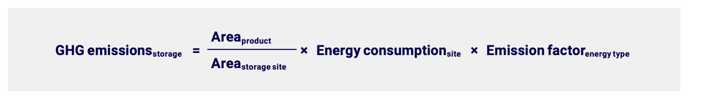
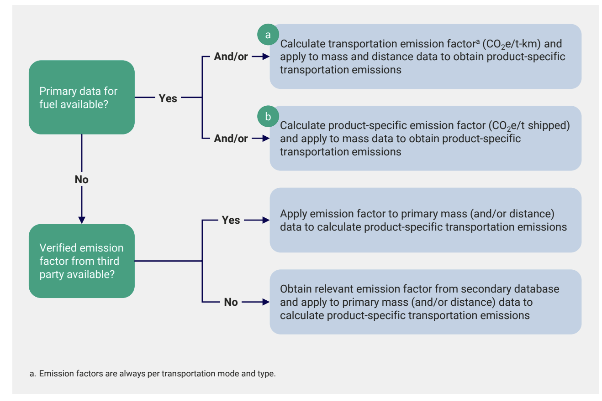
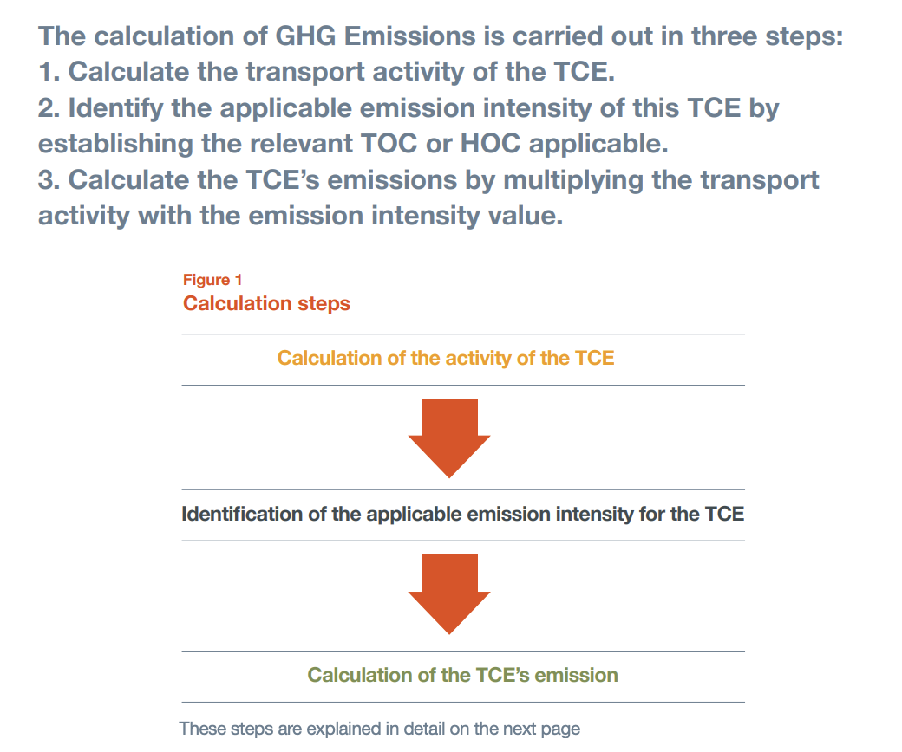

Can inbound transport be owned fleet? Would be unusual
Does transport only need to account for the the immediate supplier?
Yes higher tier emissions are included in the material EFs.
Do we need to include material storage emissions (PACT pg33)?
Is this storage of material by the facility? Or storage during transport and upstream
If facility storage, is there a risk of energy emissions being double counted?
What about the storage duration?
Storage emissions is a % of a site’s energy use emissions:
Would a simple estimator with assumptions be acceptable for PACT?
• Assume modes of transport?
• Assume a % of travel is by particular modes?
• Assume fuel type?
IS GLEC calculation actually required by PACT?
What competitor platform actually help calculate transport emissions? Sigreen?



GLEC notes
1. transport chain elements (TCEs) activity - Pg 21
= material mass x distance (tonne-km or tkm)
• If only ’Twenty-foot-equivalent’ (TEU) unit is know, can assume 10 t per TEU (6 if ligt, 14.5 if heavy)
• Distance: (See pg 22)
- SFD (shortest feasible distance) - Account for real conditions - usually recommended
- GCD (great circle distance) - ‘As the crow flies’ shortest distance accounting for curving
of the earth. Not widely known/accepted outside of aviation.
- Actual distance corrected by DAF (Distance Adjustment Factor) - If aforementioned
data is not available
- Distance information must be collected for each TCE, either through direct
measurement or estimation.
• Mass
- Mass information may be found on invoices or bills of loading within a Transport
Management System (TMS), etc.
2. Emission intensity of TCE
• transport operation categories (TOC): a group of transport operations that share similar
characteristics
• hub operation categories (HOC): a group of hub operations that share similar
characteristics
- Category periods typically defined in 1 calendar year period.
• The identification of TOCs and HOCs also contributes to avoiding the need for
calculating emission intensity for each and every individual transport. (?- how?)
• Primary data >
Modeled data (Section 3 Module 2) >
default data (Section 2 Chapter 1)
Alt - Collect value from contracted operator that used primary(A) /Modeled (B) data
Default data can provide a general indication of emissions, illuminating hotspots, and can offer a structure for prioritizing further data collection to improve accuracy. To help companies that are starting out on a journey to high quality logistics emissions calculations, Section 3 Module 2 of the Framework presents a wide range of default data
with varying levels of precision that provides a general indication of emissions.
3. Calculate TCE emissions
= Transport activity x Emission intensity
Default fuel efficiency & emission intensity values (P83)
“Unless specified otherwise, values are globally applicable.” (p84)
Example
Example (More on pg 105):
An average of 0.15l “diesel” is consumed per tkm in a TOC, the associated GHG emission
intensity when using a typical WTW diesel emission factor for Europe, which includes 5%
biodiesel, would be:
0.15 l x 3.32 kg/l CO2e = 0.498 kg CO2e per tkm
To calculate the GHG emissions for a specific consignment on a TCE associated with the
above TOC, its emission intensity must be multiplied by the TCE’s specific consignment
mass and activity distance. So, if the consignment mass is 450kg and the distance
20km then, for the above example, the total emissions for the consignment on this TCE
would be:
0.45 t x 20 km x 0.498 kg CO2e per tkm = 4.48 kg CO2e
IDEAs
• Skip calculating based on primary data in initial implementation
• No way the facilities can actually calculate the Intensity.
• Instead rely on default value, or basic modelling and distance estimates
• And provide guidance to how to ask for transport info?
• Should some/all inbound transport data be captured as part of material creation?
Mass of material
Distance traveled by material
Method of transport
Fuel type of transport
PACT doc notes
the following data and information should be collected and used:
• Fuel usage
• Mode of transportation, such as road or rail
• Mass of transported product in tons (expressed per unit of analysis)
• Distance covered
• Load specifications (if available)
• Energy consumed by storage facility
• Area contracted to store reference product (in case of third-party storage).
Inbound scope include:
Storage
Emissions related to
the energy consumed by
the storage facilities
Well-to-tank
upstream fuel production and
transportation
Tank-to-wheel
fuel combustion
Transport calculation steps based on data availability
Calculation of product transportation emissions depends on the availability of data on fuel consumption, mass, distance, and load factor (See diagram)
‘Bad’ - No verified emission factors from 3rd party
Obtain relevant emission factor from secondary database
and apply to primary mass (and/or distance) data to
calculate product-specific transportation emissions
Better - Have verified emission factors from 3rd party
Apply emission factor to primary mass (and/or distance)
data to calculate product-specific transportation emissions
Best - Primary data for fuel available?
Calculate transportation emission factor (CO2e/t-km) and
apply to mass and distance data to obtain product-specific
transportation emissions HOW?
and/or
Calculate product-specific emission factor (CO2e/t shipped)
and apply to mass data to obtain product-specific
transportation emissions HOW?